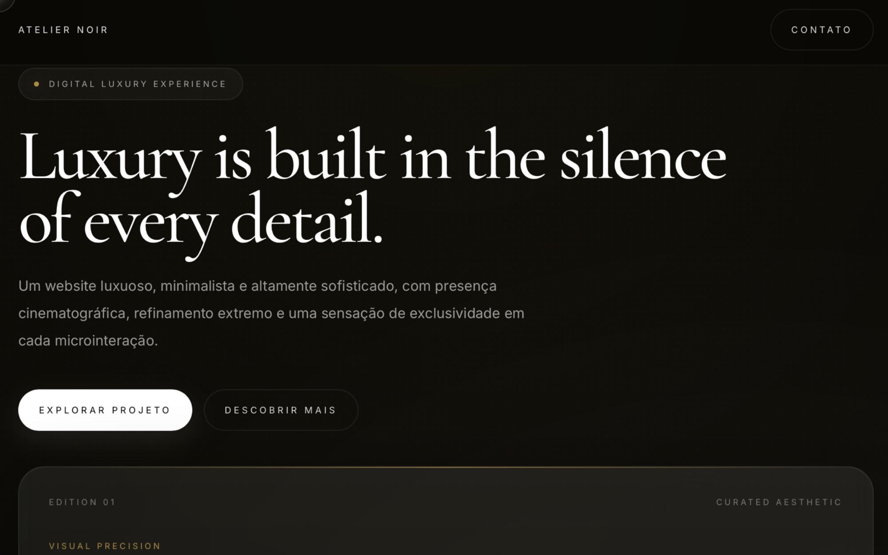
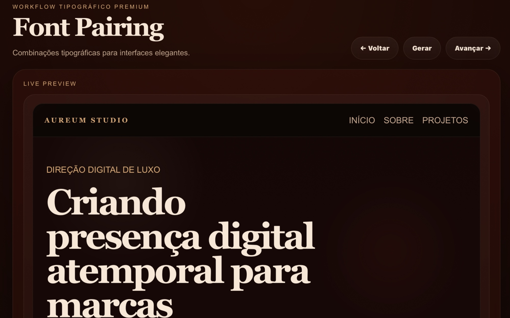
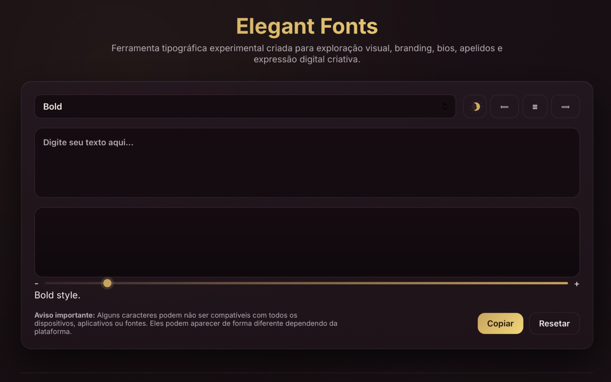

03 / WEBSITE · DIREÇÃO VISUAL

“Design, movimento e estrutura coexistem com intenção.”
Sou Gusthaf Versailles, um desenvolvedor web focado em criar ambientes digitais imersivos onde design, movimento e estrutura coexistem com intenção.
Meu trabalho não é sobre excesso. É sobre presença, controle e um ritmo visual que faz uma marca parecer consolidada desde a primeira interação.
Além do desenvolvimento visual, cada projeto é construído com práticas modernas de segurança e estabilidade projetadas para evitar vulnerabilidades e garantir confiabilidade a longo prazo.
O verdadeiro valor de uma criação está naquilo que ela consegue transmitir.
Cada interface deve parecer intencional, composta e inconfundivelmente presente, desenhada para prender atenção pela atmosfera, não pelo excesso.
Da estratégia ao movimento.
Todo projeto começa entendendo como a marca deve ser percebida, não apenas como ela deve parecer.
Tom, referências e território visual são definidos antes da interface ganhar forma.
Eu traduzo a presença da marca em estrutura, composição e hierarquia para que a experiência pareça imediatamente distinta.
As telas são moldadas com precisão e contenção, equilibrando clareza editorial com performance técnica.
O resultado é um ambiente digital que parece refinado em qualquer dispositivo.
O movimento é usado com intenção para controlar o ritmo, guiar a atenção e elevar a atmosfera geral da marca.
Um design de interação sutil transforma navegação em presença.



Um conceito focado em atmosfera, ritmo e profundidade emocional, usando movimento e ritmo visual para tornar a interação imersiva e memorável.
Uma ferramenta interativa criada para analisar e comparar combinações tipográficas em tempo real de interface. Permite testar hierarquia, ritmo visual e legibilidade diretamente em layouts simulados.
Ferramenta criada para transformar textos comuns em variações visuais com caracteres unicode, facilitando a criação de nomes, bios e composições tipográficas para uso digital. O projeto foi pensado para oferecer exploração rápida de estilos, pré-visualização imediata e cópia prática.
Se você quer uma presença digital com autoridade visual, é aqui que a conversa começa.